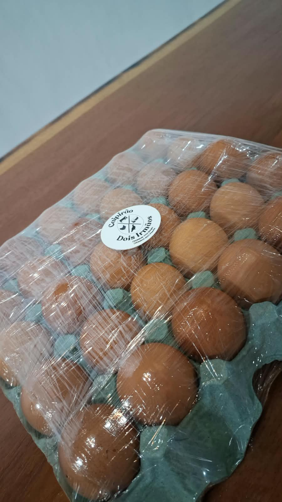
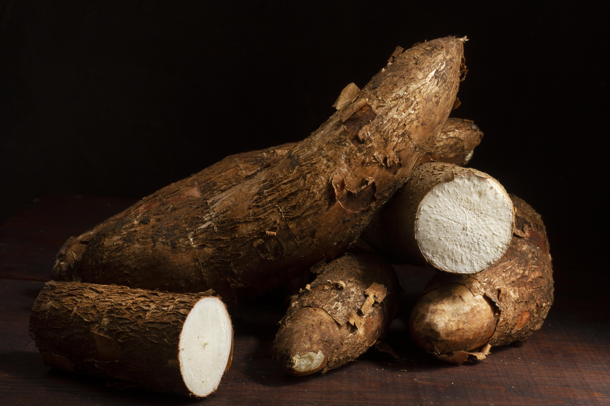
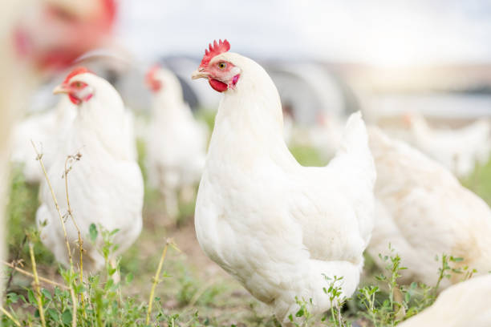

Queijos
Sabor e tradição para deixar sua mesa ainda melhor.
Confira alguns dos produtos que fazem parte da nossa história.
Sabor e tradição para deixar sua mesa ainda melhor.

Uma opção versátil para suas refeições do dia a dia.

Um alimento tradicional, perfeito para diversas receitas.

Tradição e sabor do campo para suas refeições.